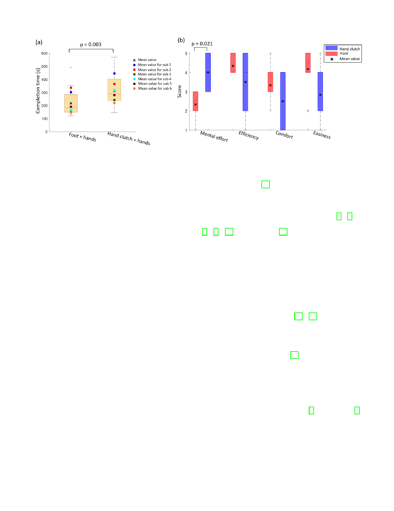

8
Fig. 11. Results: (a) completion time and (b) questionnaire.
to move”. However, most of the individual comments reflected
the ambiguity of bimanual operation with clutch solved by
the additional foot control, e.g. “Using hand clutch cannot
conduct simultaneous movement of endoscope and instru-
ments”,“There is coupling on both hands, i.e. when using one
hand to control the endoscope, the other hand holding the
tool moves together unconsciously”,“It is a little bit confusing
sometimes whether the hand is controlling the endoscope or
the tool”.
V. DISCUSSION
The experimental study presented above has validated the
design concept and the feasibility of the novel foot-control
endoscopic robotic system. All the participants could tele-
manipulate two surgical instruments and one endoscope to
intuitively conduct the surgical task using hands and foot
simultaneously. The average completion time per set ranged
from [161.5 - 337.0] s for foot-hands tri-manual control, and
from [242.8 - 446.8] s for hand clutch bi-manual control, and
the operation time was reduced in average by 43.7% using the
proposed system. In addition, most of the participants felt the
mental effort required for the operation using the foot-hands
control mode is low.
The proposed system enables three-tool operation by one
operator using foot and hands, with the following advantages:
• Three-tool control with two hands and one foot in the
proposed system yields a clear role for each limb avoiding
confusion on which instrument is controlled, in contrast
to e.g. control with hand clutch that was also tested in
above experiment. The allocation of the tasks for hands
and foot corresponds to the natural motion of the limbs
and ergonomics.
• The foot control provides unique features relative to
existing systems in endoscopic surgery: (i) Foot control
provides control independent from hands, avoiding poten-
tial coupling issues between left and right hands, or hands
and fingers. (ii) The system uses natural foot gestures
controlling the flexible endoscope in four DoFs based on
isomorphic mapping. The foot interface collects the foot
gestures, providing haptic feedback while minimizing the
operation fatigue [27].
Currently, there are a few robotic systems based on long
flexible shaft allowing three-tools robotics teleoperation. They
either have two dexterous robotic instruments and manual
control on the endoscope by a separate endoscopist [2], [3]; or
have robotic endoscope but with manual control instruments
[6], [7], [18]. Some systems [21] have reported the complete
robotic systems enabling solo-operation using a thumb com-
manded joystick. To the best of our knowledge, this is the first
three-limb teleoperated robotic system for endoscopic surgery
with foot control to tele-manipulate the flexible endoscope.
While the experimental results reported in this paper are
promising, we would like to mention several limitations of
the presented work. First, the current system is bulky, and a
more compact version would be needed in the actual operation
room. This new version will also include water/gas and
suction control buttons in the master console, which could be
commanded using the second foot [30], [31]. One participant
reported fatigue while using the foot control, perhaps due to
the large force he exerted when the endoscope was in the
dead zone. This inherent motion backlash of the endoscope
which will be improved using machine learning techniques
and compensated motion control [32].
VI. CONCLUSION
The proposed robotic system is a complete platform inte-
grating two modular subsystems: a foot-controlled endoscope
and two hand-controlled robotic arms. The robotic endoscope
can also be combined with other robotic systems based on the
standard endoscope, such as MASTER [2] and ViaCath [3].
The foot manipulation of the flexible endoscope is intuitive
and more efficient than sequential hand clutch. In addition,
the three limbs simultaneous teleoperation with hands and one
foot do not introduce much mental effort in contrast to two-
hand clutch operation.
As demonstrated in the ex-vivo tests, the proposed system
allows a single surgeon to simultaneously tele-manipulate
both the endoscope and instruments without an assistant.
The surgeon has full control for all the tools of the system,